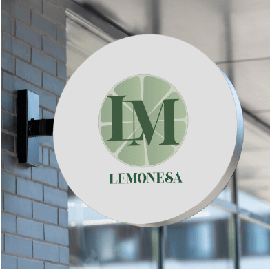
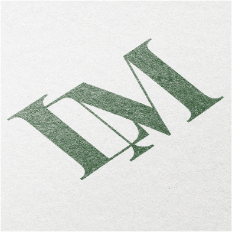
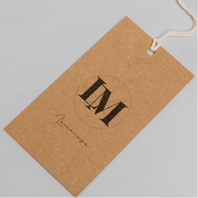

O principal ingrediente dos produtos é extraido no Sul brasileiro por famílias locais. A palavra “Lemonesa” vem da junção entre Limão e Camponês, e foi escolhida pois nessa região a fruta típica é cultivada pelas famílias camponesas que lá habitam desde séculos passados.
Inspirada em traços sofisticados mas com detalhes que lembram um limão, a combinação de tipografia e layout minimalista representa o que os produtos são: rebuscados e marcantes.


